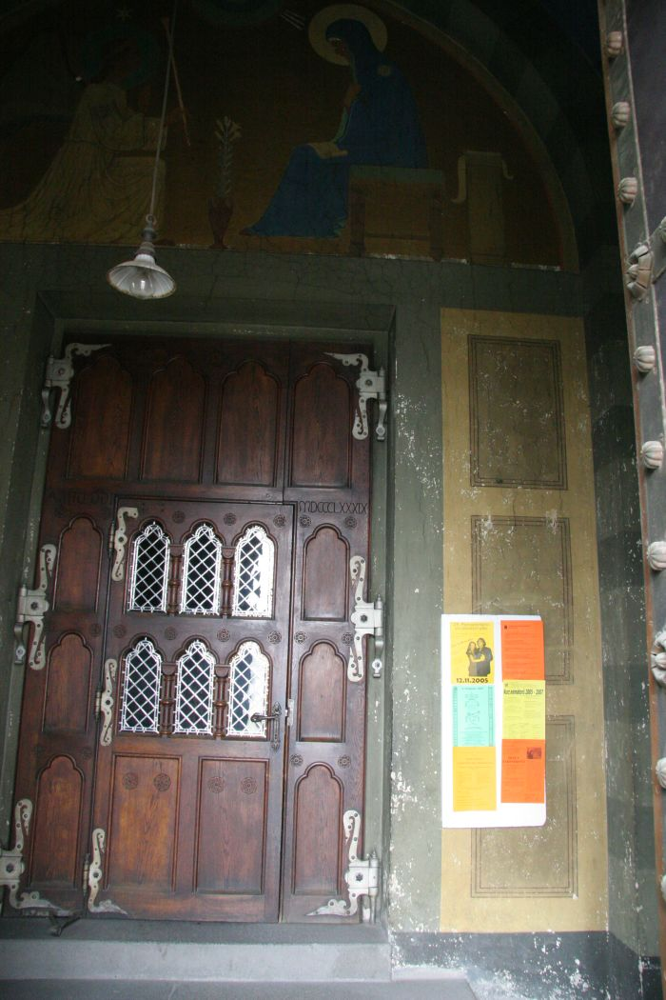

<?php
	$tabulka = true;

	require ('_include/php/zaklad.php');

	titulek ('Beuronské umìní - opatství sv. Gabriela');

	menu ('Vejít dovnitø','gabriel-vnitrek.html');
	menu ('Podívat se nahoru','gabriel-vchod-nahoru.html');
	menu ('Vyjít ven','gabriel-zpet.html');

	zahlavi ();
?>



<?php
  zapati ();
?>
